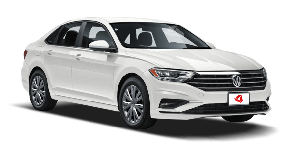
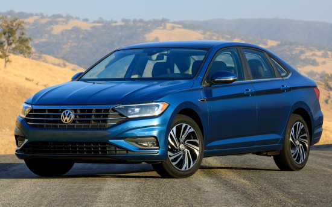
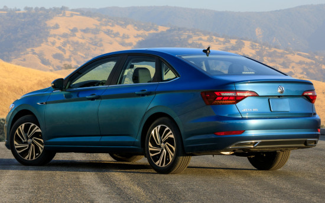
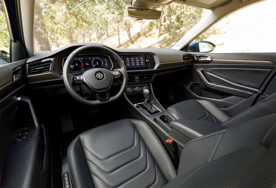
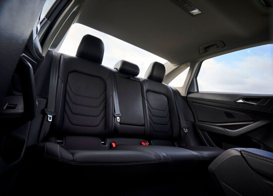

Volkswagen Jetta
Краткое описание
Volkswagen Jetta (Фольксваген Джетта) — практичный немецкий седан класса С, который производится на одном из заводов компании в Мексике. Является шестым поколением стандартной модели. Выполнен на базе Фольксваген Гольф. В сравнении со своим предшественником имеет более солидный и строгий внешний дизайн. При этом отличается первоклассными техническими характеристиками. Производится с 2011 года. Премьерный выпуск модели состоялся в 1979. Volkswagen Jetta доступен отечественным автолюбителям в комплектации с бензиновым или дизельным мотором. Объем двигателя может варьироваться в пределах от 1,4 до 2 литров. Седан поставляется с механической трансмиссией на 5 или 6 скоростей либо с роботизированной коробкой передач на 6 или 7 скоростей с двойным сцеплением. Фольксваген Джетта — переднеприводной седан.
Подробное описание
Экстерьер
Экстерьер «седьмого» Volkswagen Jetta нарисован по актуальным лекалам — выглядит четырехдверка элегантно, динамично и в меру солидно, но при этом достаточно сдержанно. Нахмуренный передок автомобиля украшают граненая оптика со светодиодными «скобами» ходовых огней, хромированный «шестиугольник» радиаторной решетки и рельефный бампер, а его крепкий тыл выставляет напоказ изящные фонари и «пухлый» бампер с двумя фигурными насадками выпускной системы. В профиль трехобъемник может похвастать энергичным обликом с купеобразной линией крыши, выразительными боковинами и правильными «прорезями» колесных арок, в который толику престижности превозносят окошки в стойках за задними дверями.
Интерьер
Внутри Volkswagen Jetta седьмой генерации проработан в «фамильном» (то есть консервативном) стиле немецкой марки и обладает хоть и сдержанным, но симпатичным, весьма презентабельным и современным видом. Архитектура передней панели разделена на два этажа: сверху располагаются два широкоформатных экрана (один из них заменяет приборную панель, а второй управляет информационно-развлекательными функциями), а снизу — самый необходимый минимум кнопок и регуляторов, заведующих «микроклиматом». Удачно вписывается в интерьер и трехспицевый мульти-руль, который на спортивный манер слегка приплюснут в нижней части. Правда, таким оформлением способны похвастать лишь «топовые» исполнения, в то время как в «базе» — все куда проще. В салоне «Джетты» седьмого воплощения без каких-либо проблем смогут усесться пять человек — свободного пространства с достатком на обоих рядах сидений. На передних местах базированы грамотно спрофилированные кресла с хорошо развитыми боковинами, оптимальной жесткостью наполнителя и большими интервалами регулировок. Задним пассажирам положен полноценный диван с центральным подлокотником.
Характеристики товара
Технические характеристики
На российском рынке для трехобъемника заявлено два четырехцилиндровых бензиновых двигателя на выбор:
- По умолчанию автомобиль оснащается «атмосферником» MPI рабочим объемом 1.6 литра с распределенным впрыском горючего,
16-клапанным ГРМ типа DOHC и варьируемыми фазами газораспределения, который генерирует 116 лошадиных сил
при 5800 об/минуту и 155 Нм крутящего момента при 3800-4000 об/минуту. - Более производительные версии могут похвастать 1.4-литровым агрегатом TSI с облегченным блоком из алюминиевого сплава,
турбокомпрессором, непосредственным «питанием», ременным приводом 16-клапанного ГРМ,
фазовращателями на обоих распредвалах и интеркулером, выдающим 150 л.с. при 5000-6000 об/минуту
и 250 Нм пиковой тяги при 1500-3500 об/минуту.
«Младший» мотор сочетается с 5-скоростной «механикой» или 6-диапазонным гидромеханическим «автоматом»,
в то время как «старшему» полагается исключительно автоматическая коробка о шести передачах.
Скорость, динамика и расход
Ускорение с места до 100 км/ч занимает у четырехдверки 8.9-12.7 секунды, а ее «максималка» достигает 187-210 км/ч.
В комбинированном цикле машине в среднем хватает от 6.4 до 6.7 литров топлива на каждую «сотню» пробега в зависимости от варианта исполнения.
Конструктивные особенности
В основе Volkswagen Jetta седьмого поколения находится модульная платформа MQB,
а его кузов на широкую долю состоит из высокопрочных марок стали.
На обеих осях автомобиля использованы независимые подвески:
спереди — вида МакФерсон, сзади — четырехрычажная система («по кругу» — с поперечными стабилизаторами и пассивными амортизаторами).
Седан оборудован рулевым управлением реечной конфигурации, укомплектованным электрическим усилителем.
Все четыре колеса трехобъемника оснащены дисковыми тормозами (в передней части — вентилируемыми), функционирующими совместно с ABS, EBD и другими ассистентами.
Размеры и вес
- Длина, мм: 4702 (+43 мм)
- Ширина, мм: 1799 (без учета боковых зеркал)
- Высота, мм: 1458
- Колесная база, мм: 2686 (+35 мм)
- Объем топливного бака, л: 50
- Объем багажника, л: 399
- Снаряженная масса, кг: 1840